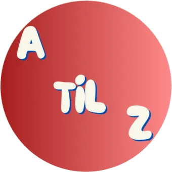
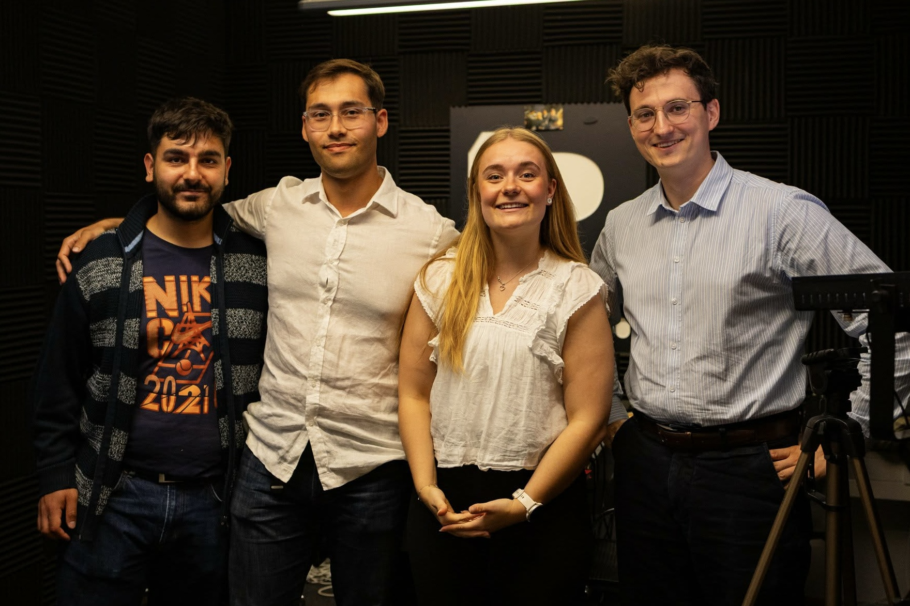
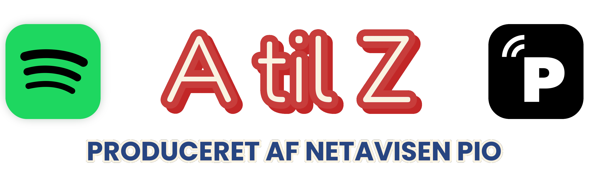

Podcast
A til Z er Netavisen Pios podcast, hvor du kan få et progressivt venstreorienteret blik på tidens aktuelle historier.

Værter Simon Bødker og Furkan Kadir Yavuz. Sammen med Malte Mathies Løcke (S) fra Frederiksberg byråd og Victoria Helene Olsen (K) fra Roskilde byråd tager vi fat om en krise, der gør drømmen om eget hjem til luksus.

← Tilbage til forsiden